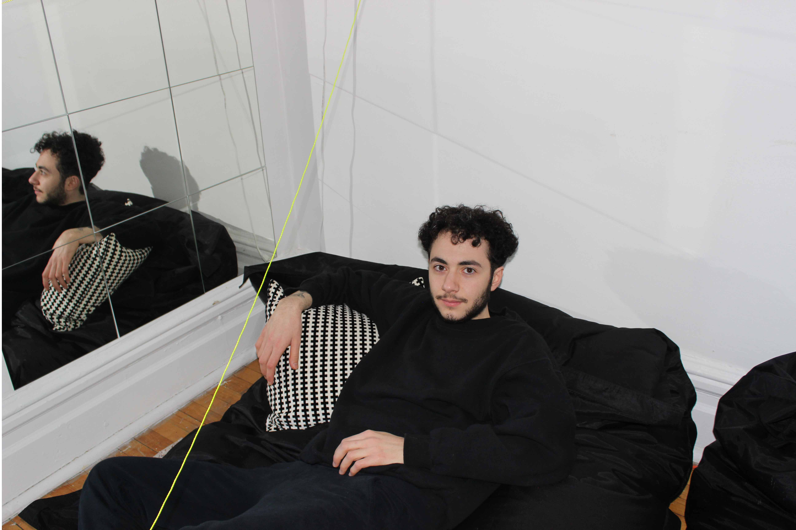

Jules Sgro is based in Montreal, Canada, and is currently studying industrial design at Concordia University. He previously studied literature and critical theory, an experience which has allowed him to establish conceptual frameworks within his design practice. His current work explores our interactions with everyday objects in an attempt to engage people more critically in their environments, a focus which has manifested in both functional and non-functional works.
jules.sgro@outlook.com
+1 514 9462130
